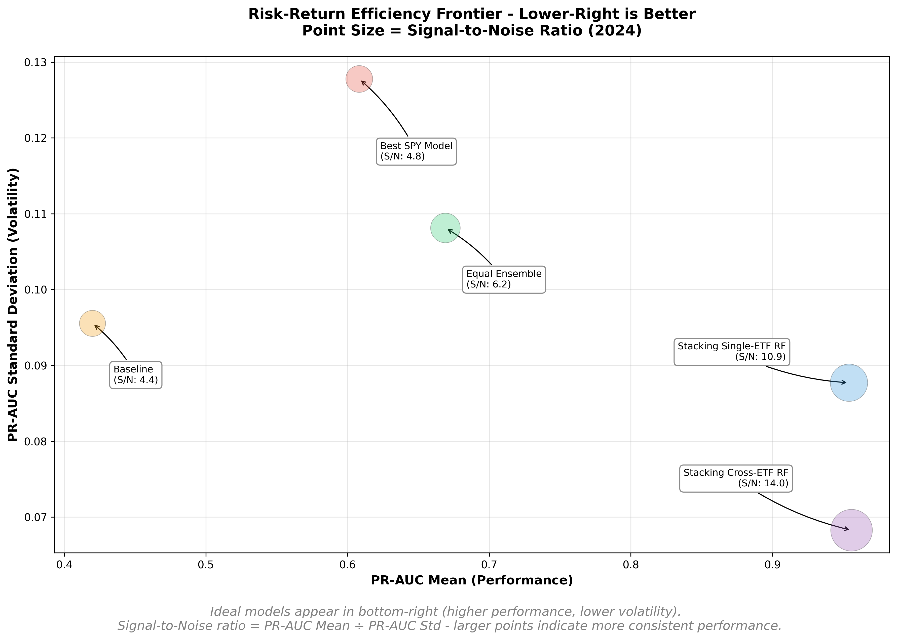

All Visualizations
Performance Overview

Progression from baseline (42%) to Cross-ETF ensemble (95.6% PR-AUC)
Market Context

Breakout rate distribution showing volatility regimes across 84 months
Cross-ETF Analysis

PR-AUC mean vs standard deviation across 9 ETFs - regression models outperform classification
Temporal Stability

Individual model performance instability motivating ensemble approach

Ensemble consistency despite baseline volatility (23%-59% range)
Ensemble Performance

Tree-based meta-learners capturing non-linear interactions

Ensemble achieving higher mean AND lower variance vs top individual models
Pareto-optimal achievement: better performance with less risk

Precision-Recall curves showing ensemble dominance across all thresholds